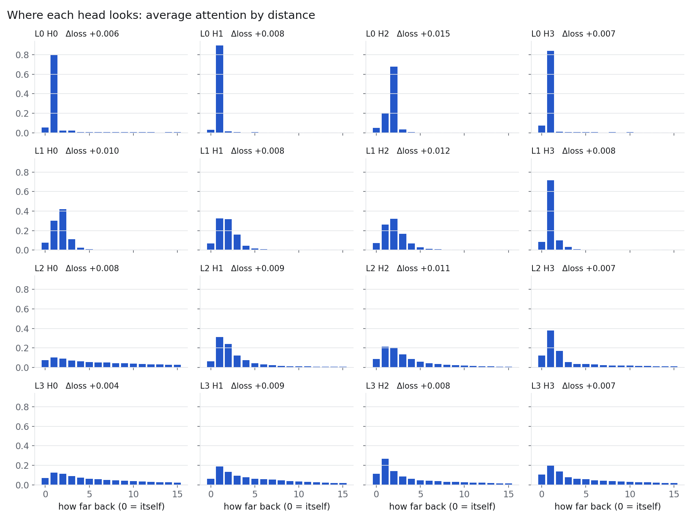
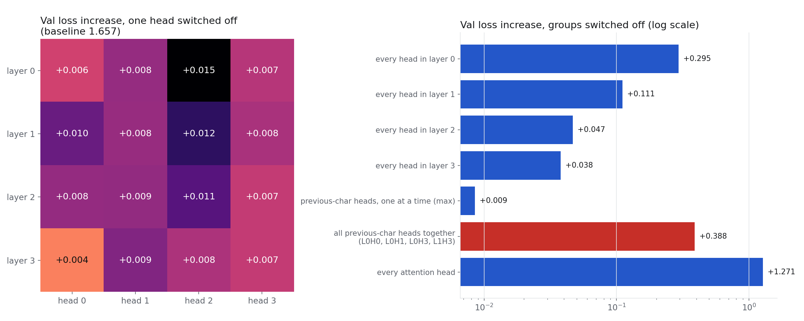
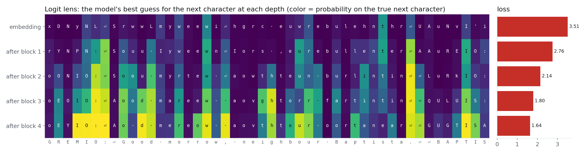
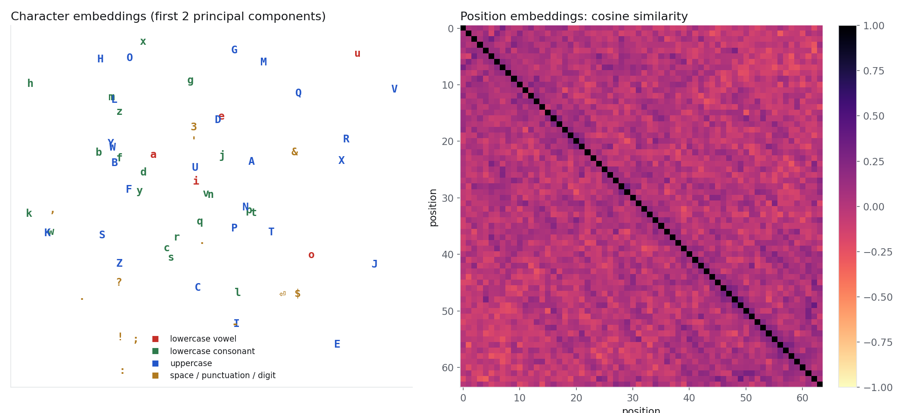
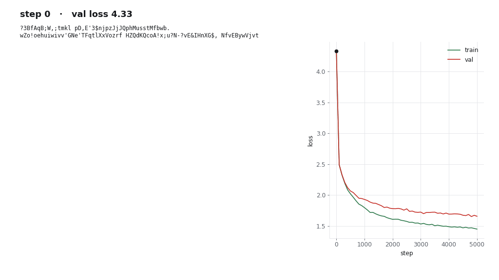

A 0.8M-parameter character-level GPT trained on Shakespeare. Pick a character and see which earlier characters each attention head reads from when predicting what comes next. The model runs in your browser, so you can also cut heads and watch what breaks.
Each square is one head reading your text: row = the character doing the looking, column = the character looked at. Click a square to trace that head on the page above. Cut it and every number on this page, generation included, comes from the model without it.
The model continues your text one character at a time with whatever heads are still in. Run it once with the full cast, then cut the previous-character heads and run it again.
Measured on the trained model in PyTorch. Every figure comes from analyze.py.




